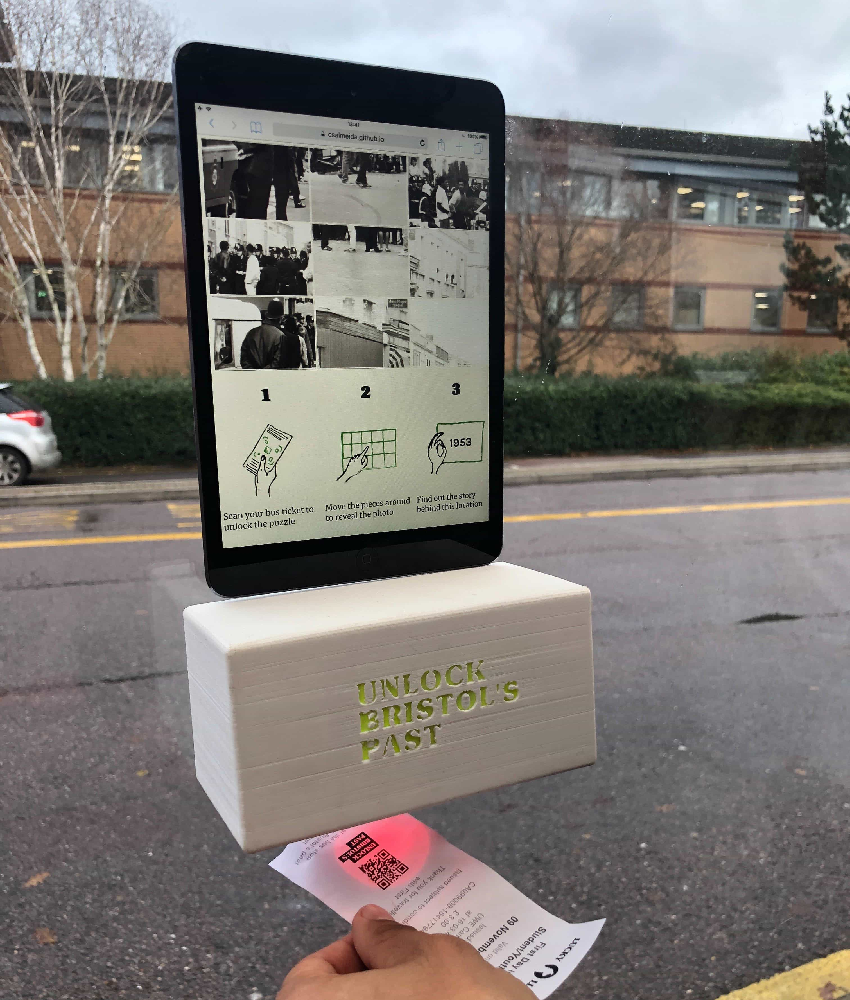

About the project
A group interaction design project that aims to connect Bristol’s activist history with the present and educate people on key events in Bristol’s past in order to raise awareness and initialise conversations.
How it works
We would aim to achieve this by deploying the designed artefact on bus stops in areas where an interesting event has previously occurred. Bus users would then be invited to scan their tickets to interact with the artefact to solve a puzzle of a photograph related to a specific event. After the puzzle is solved, the image is given a broader context as more information is revealed. Many past events are not widely known about, for example, the Bristol bus boycott, the opposition to the construction of the M32, and the city's past with the slave trade. We aim to engage people with the history of their city.
Research
Research undertaken included field research where the team visited different indoor and outdoor spaces in Bristol in order to decide where the installation could be situated as well as to learn more about Bristol's history. Online research was also carried out to find out about interesting historical events that have happened in Bristol. Our final solution was inspired by case studies including, designer Ilse Heesterbeek's ‘History Travels With You’ project, Amnesty International poster campaign (2006), and McDonald’s ‘Sort your head out’ campaign (2008). Findings from our research were documented through taking photos and writing weekly blog posts.
Solution

A high-fidelity prototype was created to support with visualising and experimenting with the concept and demonstrating it to peers. The prototype consists of a 3D printed model of our scanner containing a bike light in which the process of scanning the designed ticket can be demonstrated, creating a more immersive role-play experience. The interactive puzzle game was created using web technologies and can be displayed on any interface. UI designs were also produced to show what the puzzle game would look like as well as mockups of how it would appear at bus stops. The final artefact would be deployed in chosen bus stops where regular bus users would be able to find out more about Bristol and provide information through the use of a ludic process.
To see how the prototype works, a short video demonstration and poster display have been put together.